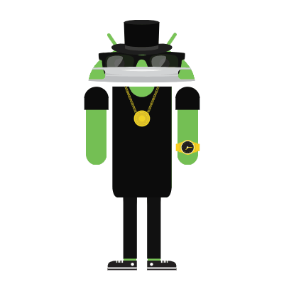

About Me
Hello! my name is Loc Huynh and I love learning coding. Currently
I'm attending La Quinta High School AP Computer Science. My hobby is
learning to code and playing games.

Grade:
10th grade
| Schedule |
| Period 1 |
AP Computer Science Principle |
| Period 2 |
English 2 |
| Period 3 |
World History |
| Period 4 |
Geometry |
| Period 5 |
Chemistry |
| Period 6 |
Vietnamese 2 |
Hobbies
- Playing videos game
- Reading manga
- Watching movies
Favorite Movies
- Avenger:Infinity War
- A Silent Voice
- Your Name
- Tamako Love Story
- Let Me Eat Your Pancreas
Favorite Quote
"I'm not lazy, I'm just conserving energy"-Oreki Houtarou
Goals & Aspiration
In this class I hope to learn how to code and other stuff.
My short term goal is to study harder and be positive everyday and do my
homework everyday.
My long term goal is to become a Computer Science Engineer.
Biography
Loc's is in 10th grade his hobbies are mostly reading manga and playing
games.
He like eating ramen and rice for his main dishes and side dishes.
Also he like to learn how to start coding since his main goal is to become
a computer science engineering.